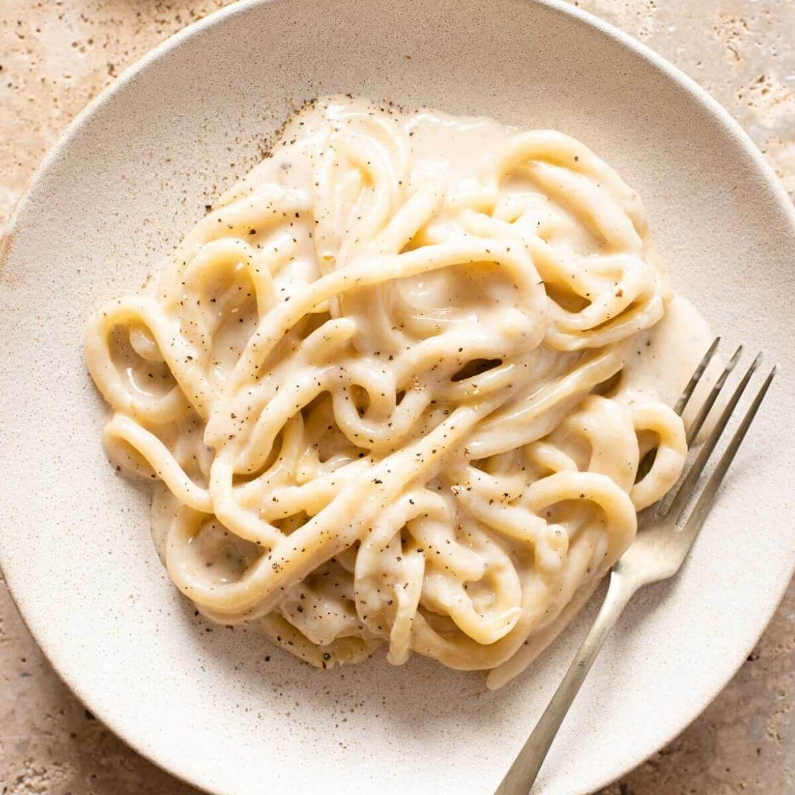

Cacio e pepe

Description
The authentic Italian Cacio e Pepe recipe is made in minutes with only three simple ingredients: Pecorino Romano Cheese (Cacio), black peppercorns and pasta. A triad of simple but strong flavors that come together in this recipe, perfect for any occasion.
A dish prepared with few traditional Italian ingredients, simple and genuine, which has its roots in the world of sheep farming and quality raw materials. If you're here it's because you want to make the best cacio e pepe recipe you've ever had! So, for this Italian recipe absolutely no oil, no butter and no cream!
Ingedients:
- 350 g (12 oz) of spaghetti
- 220 g (2 cups) of pecorino romano
- 14 g (2 tablespoons) of whole black pepper
- 1.75 l (7 1/2 cups) of water
- 1/2 tablespoon of salt
Steps:
- First start by grating the Pecorino Romano. When ready, set aside in a bowl. Then grind the black peppercorns. For this you can use a pestle, a meat pounder or a pepper grinder adjusted so that it doesn't grind too finely. The black pepper should not be a powder.
- Toast the ground pepper in a large skillet over medium heat. Stir occasionally and check to make sure it doesn't burn. It will take 2 to 3 minutes and you will smell the intense aroma of the pepper. Set aside.
- Now boil the water with very little coarse salt (maximum 1/2 tablespoon) to cook the pasta. Respect the quantity of water indicated in the ingredients. This in fact, as you will learn, is essential for the success of the recipe. When the water boils, put in the spaghetti. Let the pasta cook for about 5 minutes
- Meanwhile add 2 ladles of pasta cooking water to the toasted black pepper and turn the heat under the skillet to low.
- After the first 5 minutes of cooking, now is the time to transfer the pasta from the pot to the skillet. The spaghetti should FINISH COOKING IN THE SKILLET with the pepper.
- Check the cooking time on the spaghetti package. Add another ladle of pasta water if needed and stir to get even cooking. SAVE THE COOKING WATER. The pasta cooking water is rich in starch which is used to make the pasta creamy.
- While the pasta is cooking, make the Pecorino cream. Pour a ladleful of the starchy cooking water over the grated pecorino cheese and stir quickly. You'll get a creamy consistency similar to ricotta.
- Once the spaghetti are cooked, turn off the heat, wait about half a minute and then add the pecorino cream a little at a time. Stir in the spaghetti evenly. Spaghetti cacio e pepe recipe is ready! If you like, add more grated pecorino just before serving and another sprinkle of pepper for garnish. Serve pasta Cacio e Pepe immediately and strictly hot.
Recipe Credit
You can find the original recipe here.